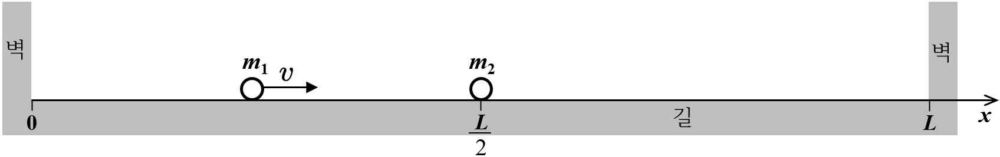

문제 1
다음 제시문을 읽고 논제에 답하시오. (40점)
[가] 두 물체가 충돌할 때 외부에서 힘이 작용하지 않으면 충돌 전과 충돌 후의 운동량의 합은 항상 일정하게 보존된다. 이를 운동량 보존 법칙이라고 한다.
[나] 물체가 운동할 때 마찰이나 공기 저항을 받지 않는다면 물체의 퍼텐셜 에너지와 운동 에너지의 합인 역학적 에너지가 일정하게 보존된다. 이를 역학적 에너지 보존 법칙이라고 한다.
논제 II-1
[논제 II-1] 제시문 [가], [나]를 읽고 다음 물음에 답하시오.
[그림 1]과 같이 양쪽 끝이 벽으로 막혀 있는 길이 \(L\)의 평평하고 (\(x\)축과 평행) 마찰이 없는 길을 따라 질량 \(m_1\)의 공이 \(v\)의 속력으로 등속 직선 운동을 하다가 \(x = \dfrac{L}{2}\)에 정지해 있는 질량 \(m_2\)의 공과 첫 번째 충돌하였다. 이후 두 공이 두 번째 충돌하는 지점을 \(x_0\)(단, \(0 \le x_0 \le L\))라고 하자. 두 공의 질량비 \(\alpha = \dfrac{m_2}{m_1}\)로 정의한다. 두 공이 충돌할 때와 공이 벽이 충돌할 때 모두 역학적 에너지는 보존되고, 공의 크기는 무시한다.

(1) \(x_0\)의 위치에 따라 가질 수 있는 \(\alpha\) 값이 몇 개인지 구하고, 그 근거를 논술하시오. (10점)
(2) \(x_0 = \dfrac{3}{4}L\)일 때, 가능한 \(\alpha\) 값을 모두 구하고, 그 근거를 논술하시오. (10점)